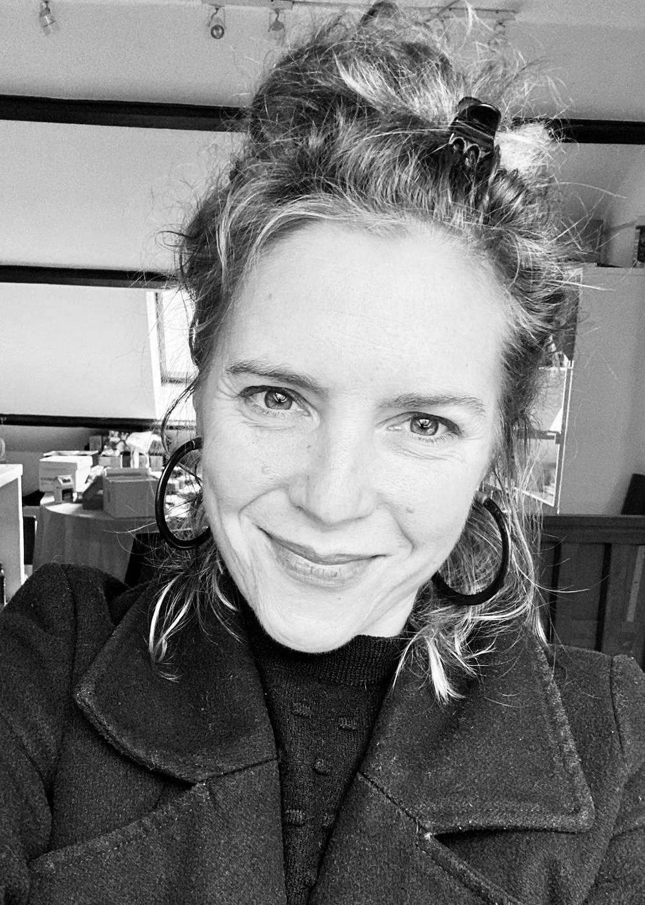

Apprenez à connaître Elise et sa vision du yoga.

Rien ne me destinait initialement à l'enseignement du yoga. De nature profondément créative, j'ai suivi des études de mode et d'art. Je suis avant tout une artiste : je dessine, je peins, j'explore.
Mon parcours est d'abord jalonné d'aventures riches et atypiques : j'ai tenu ma propre librairie, parcouru le monde, et j'ai longuement vécu sur l'île de La Réunion. Puis, en 2020, une grande épreuve de vie est venue profondément rebattre les cartes. Cet arrêt sur image imprévu et vertigineux m'a demandé de réapprivoiser mon propre corps avec douceur. C'est de ce bouleversement qu'est née une autre façon d'appréhender le vivant, et le choix d'enseigner le yoga.
Aujourd'hui, c'est toute cette sensibilité artistique et cette écoute si intime d'un corps fragile et fort à la fois que je transmets : une façon singulière de proposer mes cours, bienveillante, et profondément adaptée à l'humain.
Une approche différente du Yoga, à Clamecy, Tannay, Villiers...
Je conçois aujourd'hui mon enseignement comme une invitation à explorer son corps à travers une pratique du yoga saine et réactualisée. Une pratique hybride, vivante, qui ouvre un espace d'exploration intérieure. Nous sommes à la recherche de sensations nouvelles vers une compréhension plus subtile de soi et accessible à tou(te)s. Avant tout j'essaie d'aider les gens à bouger et à s'octroyer des moments de joie, de jeu sans enjeux et sans urgence à atteindre quoique ce soit. Aider à développer une observation juste et fine, un dialogue avec ses ressentis et ses sens, une attention et une écoute précieuse.
Je sillonne la région pour faire vivre la pratique dans des salles communales, des lieux de sport, des espaces dédiés à la détente, et parfois à domicile, afin de proposer mes cours. Peu importe le lieu, l'exigence reste la même : une pratique précise, accessible et engagée.
Formée à différentes approches du yoga je me donne pour objectif de vous guider et de vous faire bouger avec justesse, délicatesse et subtilité à la recherche de sensations nouvelles. En perpétuelle recherches, études et formations, j'ai à cœur d'offrir des séances enrichies d'expertises actuelles sur le mouvement. Formée également à la mobilité fonctionnelle je l'intègre dans mes cours afin d'amplifier vos propres découvertes. Je fais évoluer ma pratique en continu pour vous accompagner au mieux, avec justesse et bienveillance.
Découvrez mes cours et trouvez celui qui vous correspond.